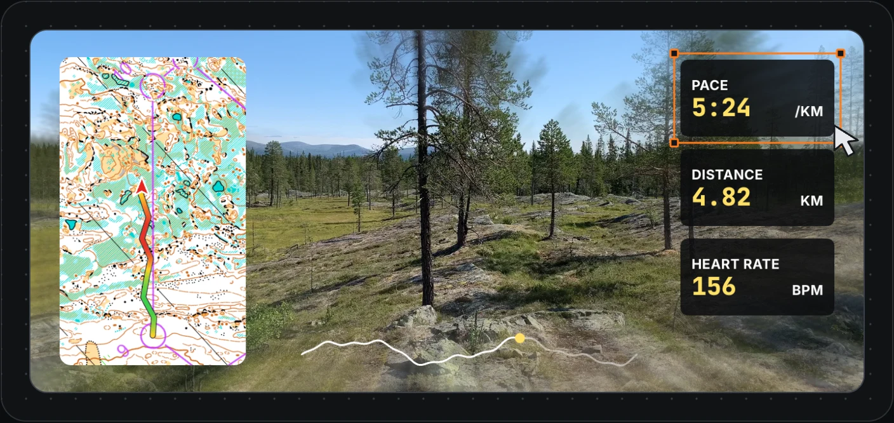
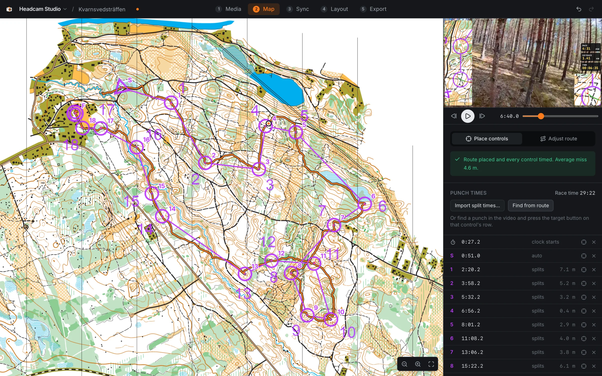
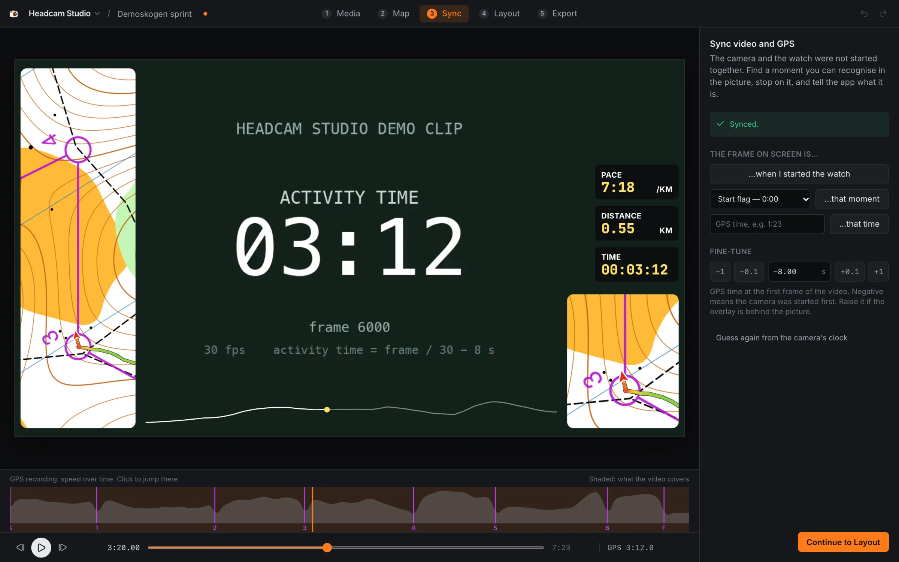
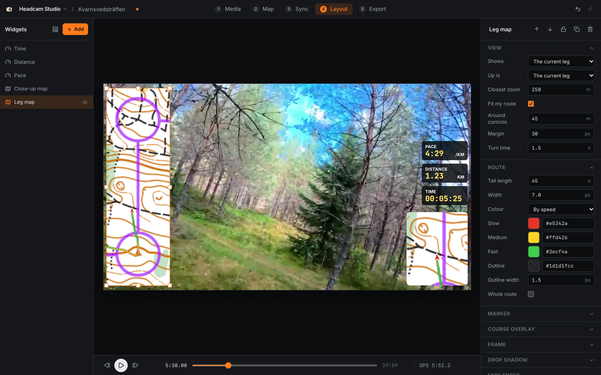

A map that follows the race
Your route is drawn onto the map as you run, with the leg you are on pointing up. The map turns and zooms at each control, the way you turned it in your hand.
For orienteers, and anyone who films what they run
Headcam Studio takes your headcam footage, the GPS file from your watch and a picture of the map, and makes a video where the map follows you leg by leg and the pace, distance and heart rate keep time with the picture.
For macOS and Windows.

Add as many as you like, put them where you want and style them to match. What you see while editing is what ends up in the exported video.
Your route is drawn onto the map as you run, with the leg you are on pointing up. The map turns and zooms at each control, the way you turned it in your hand.
The line behind you shows where you slowed down and where you ran. A close-up map can sit beside the leg map for the detail around you.
Time, distance, pace, heart rate, elevation, cadence, power. Each one is a widget with its own font, colour, label and icon.
An elevation profile along the bottom with a dot where you are, or the same for heart rate or speed.
Leg times and placings from WinSplits Online or a result file, shown as you punch each control.
A club logo, the name of the race, a dark panel to put the numbers on. Save the layout and use it again for the next race.
Five steps, in order.
Say what you filmed, then pick the video, the GPS file and the map image, or drop them on the window. A recording the camera split into several files is joined into one.
Click the start, each control and the finish on the map. The app matches your route to the course and works out when you were at each control. It then shows the race time it arrived at, which should be your official time.
The map does not have to be georeferenced. Any picture of it will do.

Find the moment you set off in the video and say that this is the start. A strip under the video shows your speed over the whole recording, so a sync that is off is easy to see.

Drag widgets onto the video, resize them and change how they look. Start from the layout the app suggests or from one you saved earlier.

Render an MP4 with the overlays burned in and the sound as it was: the whole recording or just the race. It is ready to upload anywhere.
The screenshots show the demo project that comes with the app.
MP4, MOV, MKV or WebM, as cameras and phones write them, including GoPro recordings split into chapters. 4K HEVC needs a computer that can decode it; the app checks and tells you.
Insta360 .insv files have to be exported from Insta360 Studio first.
FIT, GPX or TCX, from your watch or exported from Livelox or Strava. Heart rate, elevation, cadence and power are used when the file has them.
Any image: PNG, JPEG, WebP or GIF. The course does not have to be printed on it, though it is quicker when it is.
Not an orienteer? Leave the map out and use the readouts and graphs.
The video is made on your own machine. Nothing is uploaded and there is no account. The app goes online for two things only: looking up split times, which asks WinSplits Online for the result list, and checking whether there is a new version of itself.
Headcam Studio runs on Mac and Windows computers.
M1 or later: most Macs from late 2020 on.
DownloadOlder Macs with an Intel processor.
DownloadWindows 10 or 11, 64-bit.
DownloadNot sure which Mac you have? Choose the Apple menu → About This Mac and look for “Chip” (Apple silicon) or “Processor” (Intel).
Headcam Studio is in beta. Once installed it keeps itself up to date: a new version is downloaded in the background and installed when you quit the app, or right away if you choose Restart to update.